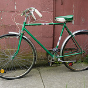

I'm having a serious problem with my chain! it's been squeaky for weeks now. I applied some WD40 to it, and it's fine for awhile, but sure enough after a few days the squeakiness comes right back. It's not even rainy.
reply: Squeaky chain is driving me nuts
Well the obvious thing you've tried: lubrication is super important to keeping your metal parts in proper working order. However, there is much contention about what type of lube you should use, based on the condition. One thing that is universally agreed is that WD40 just doesn't cut it. It evaporates quickly and doesn't keep the moving parts in working order. What's the weather usually like in your area?
reply: Squeaky chain is driving me nuts
Whoa really? My boyfriend said WD40 would be fine...but he didn't mention how often he applied it!! The weather in my area is super rainy most of the time, but we've had a dry spell lately, thus my total confusion!!